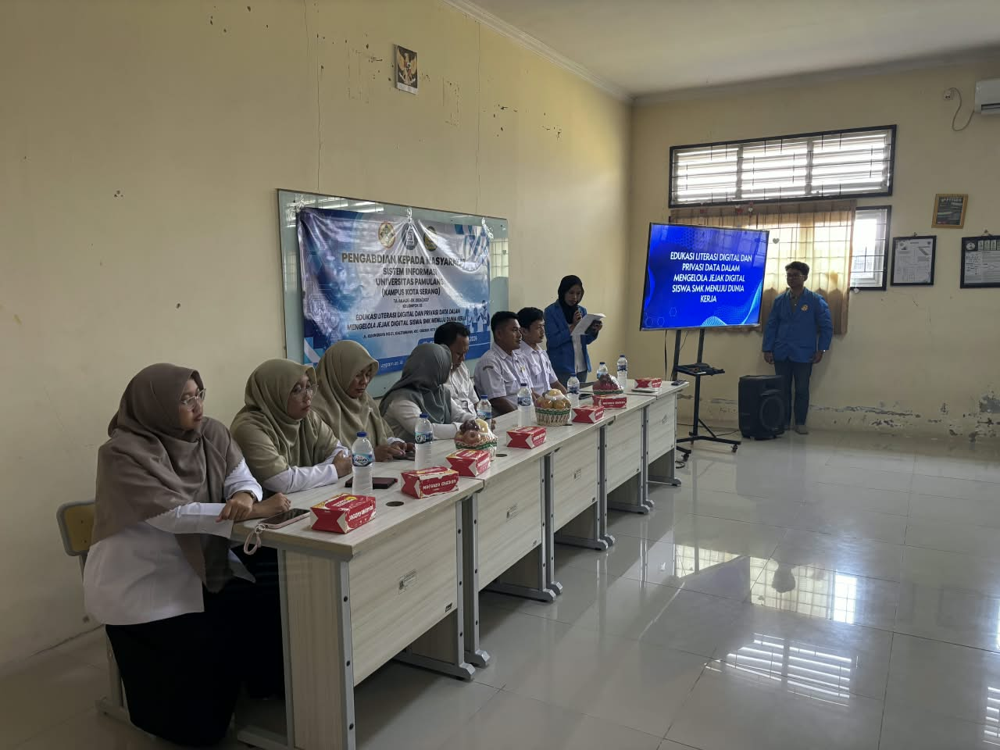
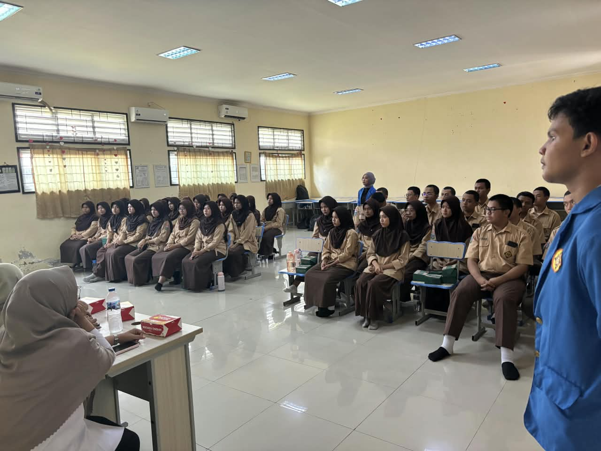

Presentasi Prototipe Solusi Pertanian Cerdas Berbasis AI
Finalis memaparkan aplikasi AgriFlow di depan dewan juri dan audiens auditorium kampus, mendemonstrasikan integrasi sensor IoT dan antarmuka web modern.
Rekaman visual dan video pelaksanaan seminar teknologi informasi, pitching karya inovatif, dan pameran stan kreativitas mahasiswa.

Finalis memaparkan aplikasi AgriFlow di depan dewan juri dan audiens auditorium kampus, mendemonstrasikan integrasi sensor IoT dan antarmuka web modern.

Suasana ramai pameran karya inovasi digital mahasiswa di Hall Kampus Serang, di mana pengunjung dan dosen penguji menguji coba langsung kehandalan produk prototipe.
Video dokumentasi resmi workshop pengembangan aplikasi kreatif mahasiswa Universitas Pamulang Kampus Serang. Menampilkan antusiasme peserta, proses mentoring desain antarmuka, hingga demonstrasi coding interaktif.